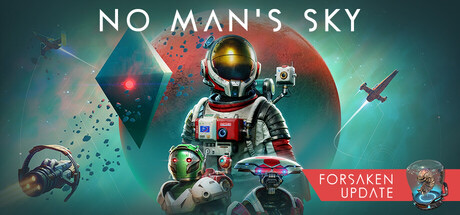

From Zero to Hero
A tiny studio, a terrible launch, and ten years of free updates.
What Is No Man's Sky?
No Man's Sky is a space exploration game by Hello Games, a small studio in England. Every planet is procedurally generated, so there are about 18 quintillion of them. You start with a broken ship, fix it, and go wherever you want.
The Launch

It was hyped for three years and came out in August 2016. The trailers promised multiplayer and big space battles. The game had neither.
Refunds followed. Players called it "No Man's Lie" and Sean Murray got death threats.
The Comeback
The studio went quiet and kept working. Three months after launch it shipped Foundation, a free update with base building. By 2018 the Steam reviews had flipped to positive.
The big ones:
- Foundation (2016): base building
- Atlas Rises (2017): story and portals
- NEXT (2018): real multiplayer
- Beyond (2019): VR
- Worlds (2024-2025): new planets and weather
- Cosmos (2026): tenth anniversary, player-owned space stations
Why I Picked This
Most games with a bad launch get patched for a year and dropped. Hello Games spent ten years fixing theirs for free. They shipped too early, then owned it.